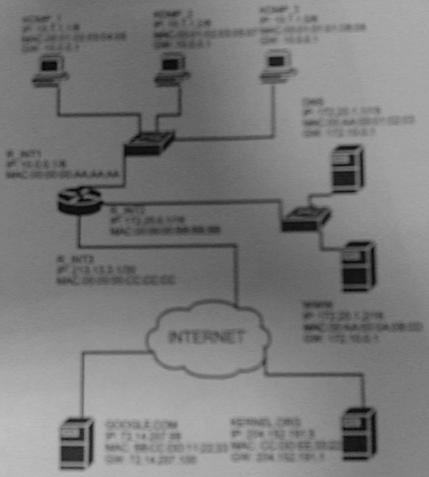

Egzamin SKO1
czê¶æ pisemna
9 luty 2006
Numer indeksu: ................................
Zadanie 1
Masz dan± sieæ 148.48.8.0/24. Podziel sieæ tak, aby uzyskaæ trzy podsieci spe³niaj±ce poni¿sze warunki:
W dwóch z nich powinny znale¶æ siê:
Trzecia podsieæ powinna byæ wiêksza od ka¿dej z pozosta³ych dwóch.
Uzupe³nij poni¿sz± tabelê:
| Numer podsieci |
Adres podsieci |
Maska (V.X.Y.Z) |
Zakres adresów |
Adres rozg³oszeniowy |
Ilo¶æ interfejsów sieciowych |
| 1 | 148.48.8.0/26 | 255.255.255.192 | 148.48.8.0 - 148.48.8.63 | 148.48.8.63/26 | 62 |
| 2 | 148.48.8.64/26 | 255.255.255.192 | 148.48.8.64 - 148.48.8.127 | 148.48.8.127/26 | 62 |
| 3 | 148.48.8.128/25 | 255.255.255.128 | 148.48.8.128 - 148.48.8.255 | 148.48.8.255/25 | 126 |
Zadanie 2
|
 |
Zak³adamy, ¿e od godziny w ca³ej Wypisz wszystkie ramki, które (uwaga: nie wszystkie wiersze poni¿szej |
| Tre¶æ komunikatu (zawarto¶æ pakietu lub ramki) |
Protoko³y | adres IP nadawcy |
adres MAC nadawcy |
adres IP celu |
adres MAC celu |
Je¶li masz bardziej czytelny diagram, wy¶lij go do mnie na marcin[at]pjwstk.edu.pl. Do sprawdzania poprawno¶ci policzonej maski, adresu sieci i rozg³oszeniowego, warto odwiedziæ: http://42.pl/ipcalc